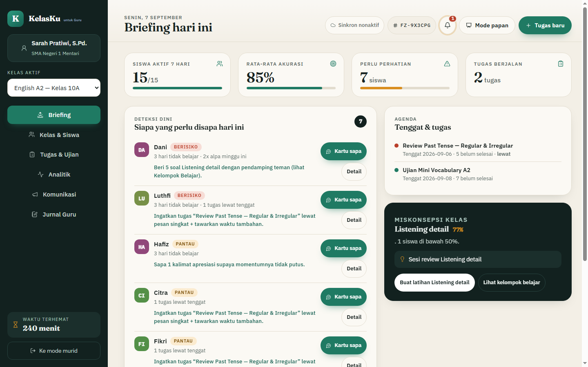

Platform Belajar Bahasa Cerdas & Terpadu
Belajar yang Mengenal Kamu.
FIEZEL menyesuaikan diri dengan polamu. Bahasa Inggris & Jepang adaptif untuk murid, serta KelasKu untuk Guru terpadu untuk pendidik.
🇬🇧 English (A1–C1 Adaptif)
🇯🇵 日本語 (Pemula AI-Guided)


👩🏫
FIEZEL KelasKu untuk Guru — Briefing & Analitik Kelas